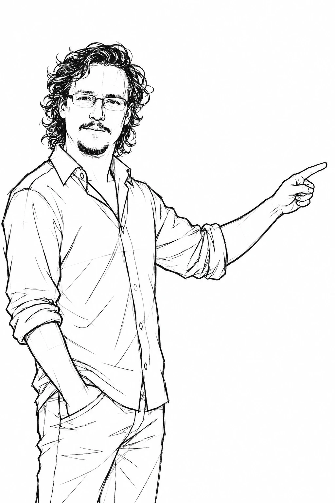

A Doctor of Philosophy for your essay, your exam or your thesis.
One-to-one writing coaching, from high school to university. In person in Pretoria East, or online.
20 minutes on Google Meet. For school learners it can be a short trial lesson. No charge, no obligation.

Wehan CoombsPhD in Philosophy, University of PretoriaBA in English Literature and Philosophy
-
15 years teaching philosophy at the University of Pretoria
-
4.5 out of 5: average student rating across eight university courses
-
98 out of 100 for an observed Grade 11 English lesson, 2026
Coaching
Reading a hard text closely, building an argument and writing a clear essay are what philosophy trains, and they are most of what English asks in Grades 10 to 12.
-
School English
English tutoring for Grades 10 to 12, Home Language and First Additional Language.
R400 an hour -
University writing
Essays, dissertations and theses in any subject. I coach and give feedback. I don’t edit or write for you.
My own subjects are philosophy and English literature, so there I can help with the content as well.
R500 an hour -
Other writing
Anything else you are writing in English, for work or for yourself. Same terms: I coach, you write.
R500 an hour
What students and mentors say
At school
Excellent subject knowledge. The lesson plans were well crafted and engaged learners, allowing them to partake and ask questions.
The student had a good relationship with the learners. They were comfortable with asking him questions.
At school
The student enhanced the learners’ vocabulary through scaffolding. Language is precise and engaging.
Wehan’s communication style is extremely effective. He engages students very well.
Teaching online
The student demonstrated excellent knowledge and innovative way of using media to deliver a successful lesson.
Even when I could not see the learners, the student’s ability to make and create a lively lesson were greatly demonstrated.
On explaining
The lecturer … is extremely kind and explains the work extremely well so that helps a ton when needing to do assignments, tests or exams.
One to one
One-on-one consultations were especially useful for receiving advice and insights for essays and assignments. Additionally, assignment feedback was always helpful and detailed.
On writing
Without exaggeration, those seminars changed the way I write and engage with the tradition in which I am trained.
I have yet to meet one who does not speak highly of him.
From my head of department
In 2019 I noted that Dr Coombs had the potential to become a brilliant lecturer. In the years since, he has more than fulfilled that potential, at first-year, second-year and honours level, and I recommend him without reservation.
How it works
- Book a free 20-minute call on Google Meet.
- We agree a plan, the rate and the dates in writing.
- We meet one to one, in Pretoria East or online.
Talks and staff sessions
I also give talks and staff sessions for schools and universities, starting with teaching and assessment in the age of AI.
See the talksAbout
I teach because I have seen what happens when students realise they can think for themselves, and that transformation carries into the rest of their lives.

wehancoombs@gmail.com I reply within two working days. Pretoria East, South Africa.
Start with a free consultation.
Bring what you are working on and tell me when it is due. If it helps, we agree a plan, the rate and the dates in writing before we start.
Book a free consultation